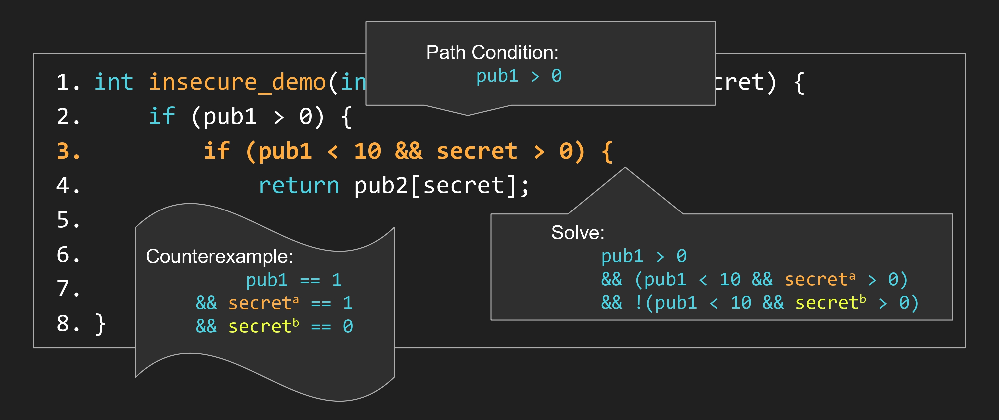
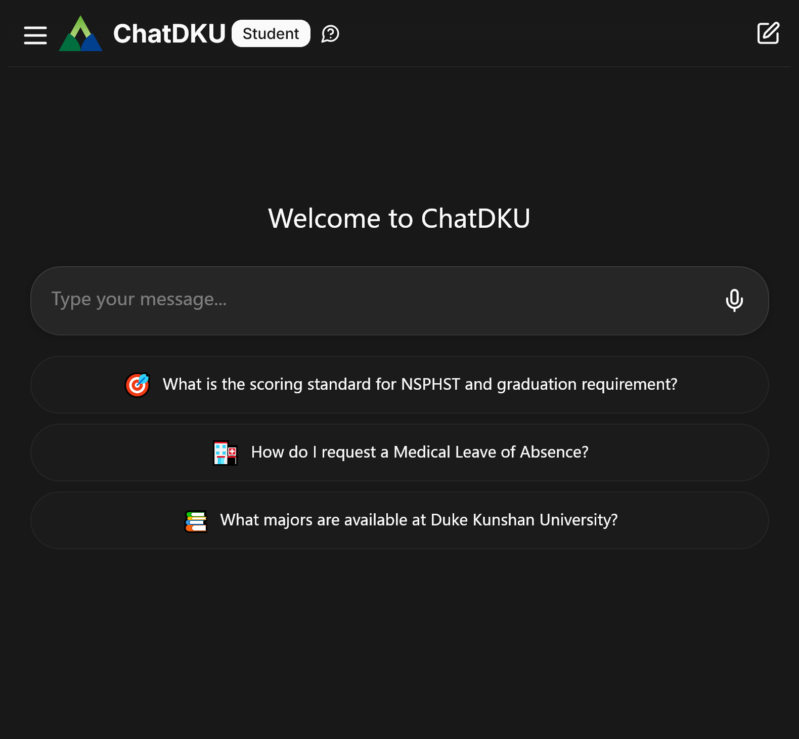
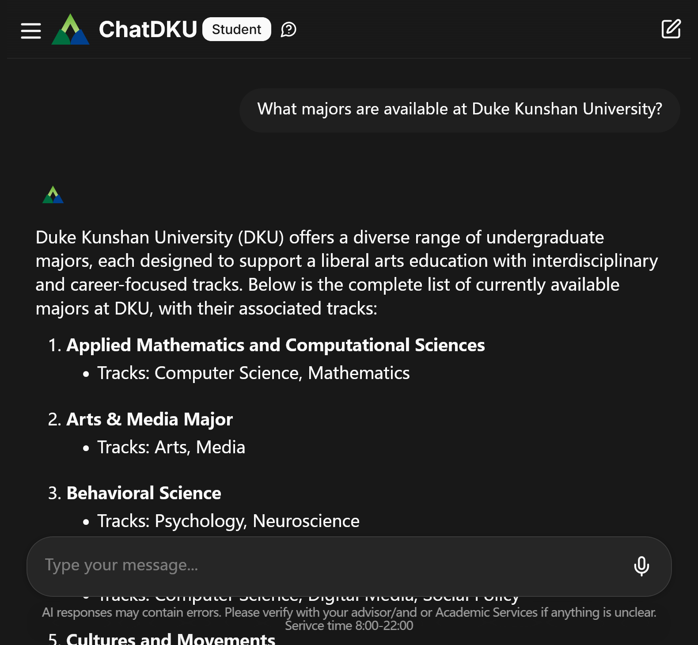
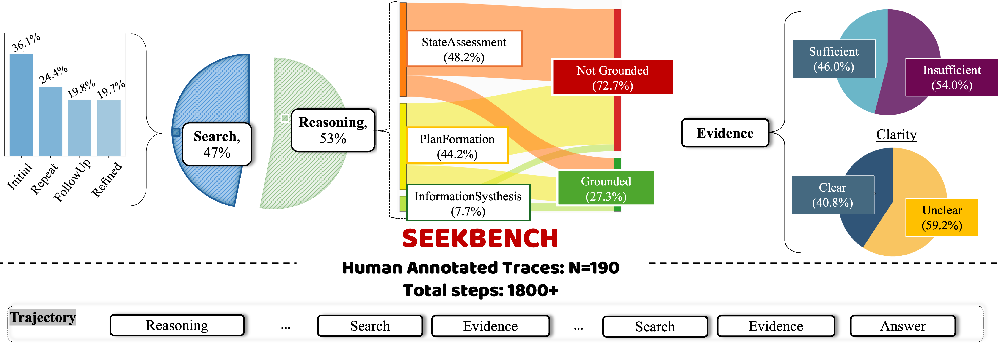

林宇翔
I am a Class of 2026 undergraduate student at Duke Kunshan University (DKU), which also grants me a Duke University degree upon graduation. I major in Applied Mathematics and Computational Sciences with a track in Computer Science.
I am interested in the intersection of computer science and discrete mathematics, specifically:
- Combinatorial and graph algorithms: I became interested in them during algorithmic programming contests such as NOIP and ICPC, which I have participated in since middle school. I have also worked on combinatorial structures such as matroids and the sunflower lemma in my undergraduate research.
- Program analysis and verification: I enjoy applying formal methods to reason about program behavior and verify rigorous semantic properties. Currently, I am using KLEE, a symbolic execution engine, to study hyperproperties in code, especially relational properties involving input-dependent behavior across multiple executions.
I also have extensive experience with retrieval and reasoning systems, both in research and in production, including work with open-source language models and evaluation pipelines. Nevertheless, I still prefer the "hand-crafted" side of computer science—algorithms and systems built through logic and structure rather than statistical learning.
Outside of academics, I enjoy the freedom of traveling on two wheels. My greatest adventure so far has been a two-week, 2,000-mile solo motorcycle trip through the Blue Ridge Parkway and three national parks. I am also a metalhead and still learning to play the guitar.
Email: yl925@duke.edu Github: theta-lin CV: (PDF) LinkedIn (less updated): yuxiang-lin
Research
Many important program guarantees are hyperproperties, meaning they relate multiple executions rather than a single run in isolation. Our work focuses on software verification and reliability analysis for input-dependent performance variations in LLVM bitcode—cases where changing an input can alter which paths a program takes or which memory locations it touches across paired executions.
Prior work such as CtChecker studies constant-time behavior using static taint analysis. We aim to overcome the limitations of purely static approaches by leveraging symbolic execution. Unlike static analysis, symbolic execution can produce concrete paired inputs that witness a failure of the target relational property, and it is generally sound (i.e., it reports only true positives, aside from implementation constraints).
We are extending KLEE, a symbolic execution engine, to automatically reason about relational properties induced by input-dependent control flow and data-dependent memory access. Our modifications introduce product-program construction directly into KLEE's source code. In addition, we have developed automated benchmarking tools for software verification to validate reported counterexamples at the binary level, compare them with results from CtChecker, and visualize the findings.

A matroid is a combinatorial structure that generalizes the concept of linear independence. It consists of a ground set E and a collection I of subsets of E, called independent sets, that satisfy three axioms. I am proposing a new combinatorial structure called a weak matroid, which relaxes these axioms.
Analogous to how graphic matroids arise from undirected graphs, I have defined graphic weak matroids using directed graphs. I am currently studying the properties of these graphic weak matroids, utilizing C++ and the Boost Graph Library for enumeration and experimentation.
A sunflower is a family of sets in which all pairwise intersections of the sets are the same, and that intersection is called the core. The parts of each set outside the core are called petals. The sunflower lemma states that any sufficiently large family of fixed-size sets necessarily contains a sunflower. I am currently exploring a variant of the sunflower lemma that connects to the structure of weak matroids.
As a university, DKU has a vast amount of institutional knowledge, but it's often siloed in different websites and documents. We created ChatDKU as a centralized information access system for the DKU community. The entire system is deployed locally on DKU's own servers, using a backend stack built with vLLM and SGLang for serving open-source language models, Text Embeddings Inference for embeddings before vector search, and Flask for backend serving.
The system combines query planning, search tools, and memory into a retrieval-and-reasoning pipeline. We built this architecture using DSPy, which acts as a lightweight framework for composing these modules. DSPy's most useful feature for us was automated prompt optimization, which allowed us to tune the intermediate reasoning steps. We also utilized LlamaIndex for unified data ingestion and querying.
This project taught me a critical lesson about engineering in the real world: frameworks like DSPy and LlamaIndex are fantastic for rapid prototyping, but their abstractions become a major bottleneck in production. They make it difficult to access and tune the underlying model inputs and system instructions, yet direct control over these components is one of the most effective ways to improve performance.
I had to go "under the hood" to solve this. My contributions focused on moving beyond the limitations of these frameworks:
- Observability: I manually integrated Arize Phoenix with our custom pipeline to visualize the actual model inputs and intermediate traces.
- Direct System Control: After identifying poorly performing components, I modified DSPy's underlying code to directly inject our own optimized instructions and templates.
- Upstream Contributions: I debugged several issues we hit during development and contributed our fixes back to the open-source LlamaIndex and DSPy repositories.
This experience highlighted another key takeaway: while there are many working "toy examples" online, using frameworks like DSPy or LlamaIndex in production reveals a significant number of bugs and stability issues. Also, we found LlamaIndex's retriever modules in particular were too abstract and hard to control. I have replaced that part of the stack entirely by implementing a unified search service using Redis, which combines vector search and keyword search. Finally, I used k6 for load testing the entire stack to ensure it could handle large-scale use by the community.
Additionally, I found it interesting that there is no asynchronous recursive website scrapers supporting features such as black/white list and SAML login (at least not at the time I worked on ChatDKU). Therefore, I also implemented a simple scraper with these features in Python with AIOHTTP.
ChatDKU system (DKU internal network only)


Publications
Most benchmarks for LLM-based information-seeking systems only grade the final answer, which hides major flaws in reasoning. We developed SeekBench, a process-level benchmark and dataset for evaluating epistemic competence in open-source model-based search and reasoning pipelines.
Our contributions were:
- A Process-Level Benchmark: We created a structured trace schema to evaluate the entire reasoning process (reasoning, search, evidence), enabling scalable, step-by-step evaluation.
- A New Metrics Framework: We defined and formalized three core competencies: Groundedness (is reasoning based on facts?), Recovery (does it adapt to bad search results?), and Calibration (does it know when to stop?).
- Large-Scale Findings: Our evaluation (over 28,000 traces) revealed that standard accuracy metrics are misleading. We found that RL-trained agents excel at gathering evidence but struggle with reasoning, and that a striking 72.7% of reasoning steps weren't grounded in any evidence at all.

Projects
Designed an affordable, scalable CNC embroidery machine. Created CAD models in FreeCAD, 3D-printed the prototype, and used Arduino for motion control.
Maintained the Django backend for FedCampus, a federated learning and analytics platform used by 90 active DKU users.
Teaching
Held weekly office hours and provided in-depth support to 20 students mostly regarding programming in Java and implementation of data structures.
Trained in Tutor Essentials (CRLA-aligned) and conducted bi-weekly sessions covering NumPy, matplotlib, and scikit-learn.
Awards
- Silver Medal — ICPC Asia Xi'an Regional (2023)
- Gold Medal — ICPC Asia Hefei Regional (2022)
- Bronze Medal — ICPC Asia-East Continent Final (2022)
- DKU Student Leader of the Year Award — (2023)
- National Encouragement Scholarship — (2023)